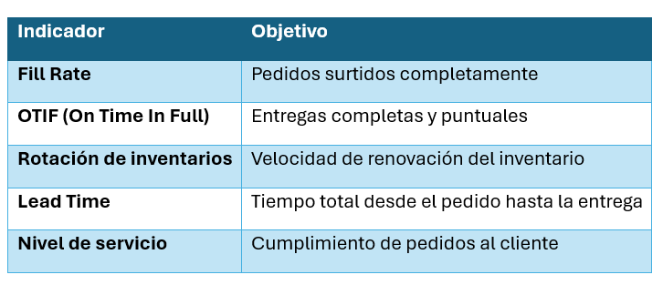

Unidad III · Tema 3.5
Logística inversa, nearshoring e indicadores (KPI)
La economía circular, la relocalización de cadenas globales de suministro y el seguimiento de métricas rigurosas definen la competitividad de la industria textil en la actualidad.
3.10 Logística inversa
Reutilización de productos en donde se recuperan materiales, componentes o artículos al final de su vida útil.
Ejemplos textiles:
- Devoluciones de clientes.
- Reciclaje de textiles y desfibrado mecánico/químico.
- Recuperación de empaques y tarimas.
- Reutilización de materiales y sobrantes de corte.
- Gestión de residuos textiles.
La economía circular ha incrementado decisivamente la importancia de esta actividad.
3.11 Nearshoring
Consiste en trasladar operaciones productivas a países cercanos al mercado de compra o adquisición.
¿Por qué beneficia a México?
- Proximidad geográfica con Estados Unidos: Envíos terrestres en cuestión de días frente a semanas desde Asia.
- Optimización de tiempos de tránsito: Reducción drástica del ciclo pedido-entrega.
- Tratado comercial T-MEC: Preferencias arancelarias y certidumbre jurídica comercial.
- Mano de obra calificada: Tradición técnica de confección y diseño industrial.
- Profundo dominio en la fabricación textil.
Muchas empresas internacionales han incrementado sus inversiones en México gracias a esta estrategia.
3.12 Indicadores de desempeño (KPI)
Métricas esenciales para evaluar el desempeño de la cadena de suministro:
| Indicador | Objetivo |
|---|---|
| Fill Rate | Pedidos surtidos completamente en la primera entrega |
| OTIF (On Time In Full) | Entregas completas y puntuales |
| Rotación de inventarios | Velocidad de renovación del inventario |
| Lead Time | Tiempo total desde el pedido hasta la entrega |
| Nivel de servicio | Cumplimiento de pedidos al cliente |

Comprueba tu comprensión
¿Cómo impulsan el Nearshoring y la métrica OTIF la competitividad de las plantas de confección en México frente a competidores en Asia?
Ir a la actividad 3.5Cuando termines los temas de la unidad, aplica lo aprendido en el caso de estudio del negocio "Confecciones ESIT".